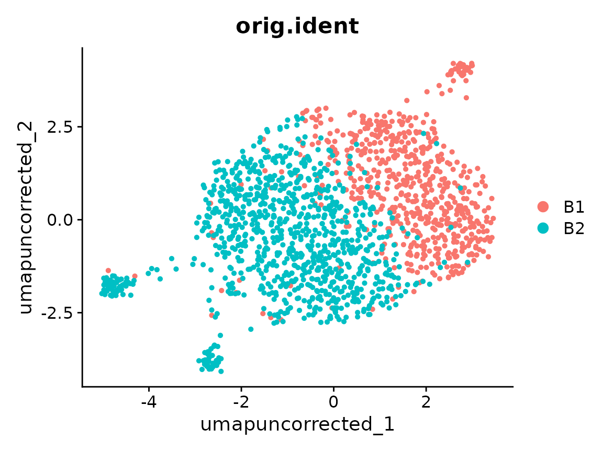
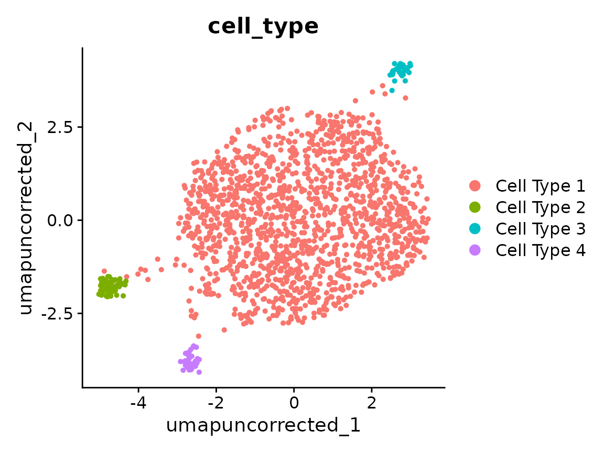
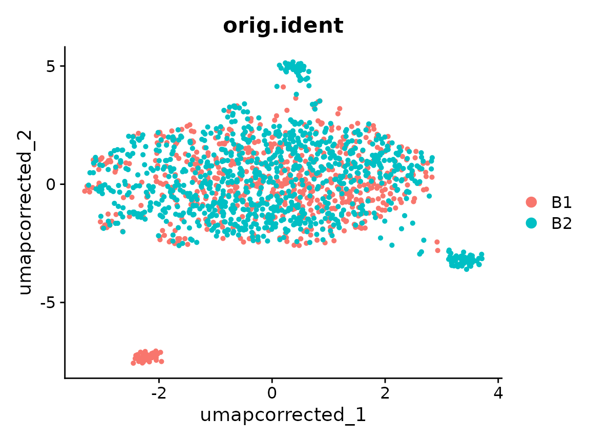
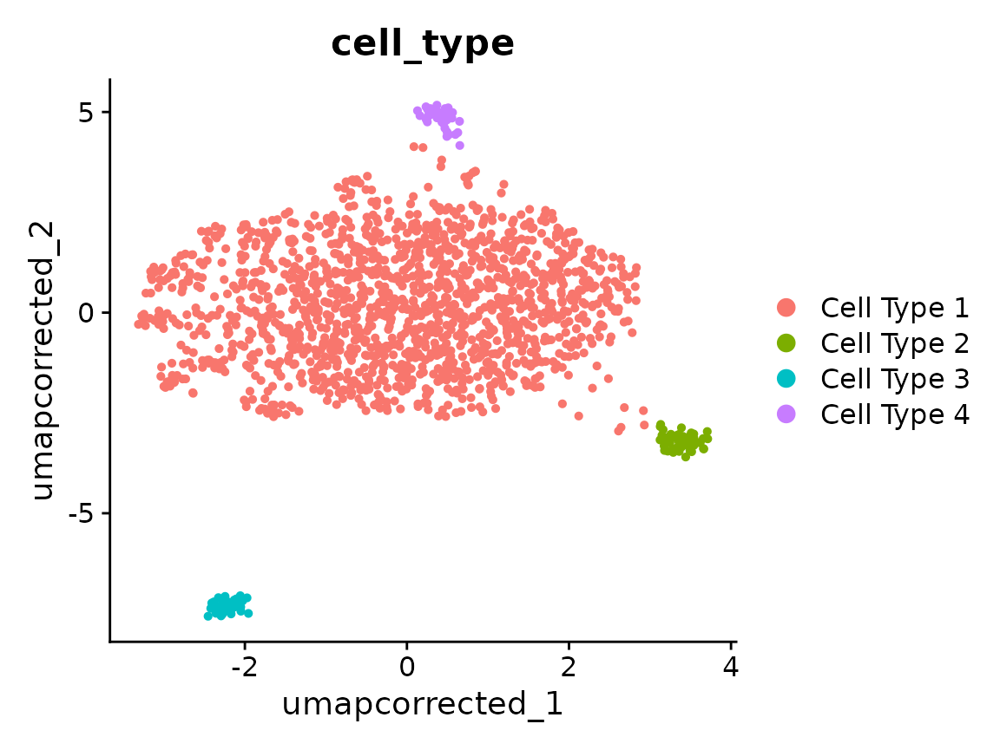

This vignette shows Canek’s default workflow on standard,
log-normalized Seurat data. If your data is SCTransform-normalized
instead, see Correct SCTransform-normalized
Seurat data — SCTransform fit per batch produces residuals on
different scales, so it needs an extra reconciliation step before Canek
can correct it. For the older, gene-expression-space correction path
(correctEmbeddings = FALSE), see the legacy version of this vignette.
library(Canek)
library(Seurat)
#> Loading required package: SeuratObject
#> Loading required package: sp
#> 'SeuratObject' was built under R 4.6.0 but the current version is
#> 4.6.1; it is recomended that you reinstall 'SeuratObject' as the ABI
#> for R may have changed
#>
#> Attaching package: 'SeuratObject'
#> The following objects are masked from 'package:base':
#>
#> intersect, tWe use the two simulated batches included in
SimBatches.
x <- lapply(names(SimBatches$batches), function(batch) {
CreateSeuratObject(SimBatches$batches[[batch]], project = batch)
})
#> Warning: Data is of class matrix. Coercing to dgCMatrix.
#> Warning: Data is of class matrix. Coercing to dgCMatrix.
x <- merge(x[[1]], x[[2]])
x[["cell_type"]] <- SimBatches$cell_types
x
#> An object of class Seurat
#> 500 features across 1579 samples within 1 assay
#> Active assay: RNA (500 features, 0 variable features)
#> 2 layers present: counts.B1, counts.B2
table(x$orig.ident)
#>
#> B1 B2
#> 631 948We follow Seurat’s standard log-normalization workflow on the whole merged object.
x <- NormalizeData(x, verbose = FALSE)
x <- FindVariableFeatures(x, nfeatures = 100, verbose = FALSE)
x <- ScaleData(x, verbose = FALSE)
x <- RunPCA(x, verbose = FALSE)
#> Warning in svd.function(A = t(x = object), nv = npcs, ...): You're computing
#> too large a percentage of total singular values, use a standard svd instead.
x <- RunUMAP(x, reduction = "pca", dims = 1:ncol(Embeddings(x, "pca")),
reduction.name = "umap_uncorrected", verbose = FALSE)
#> Warning: The default method for RunUMAP has changed from calling Python UMAP via reticulate to the R-native UWOT using the cosine metric
#> To use Python UMAP via reticulate, set umap.method to 'umap-learn' and metric to 'correlation'
#> This message will be shown once per session
DimPlot(x, reduction = "umap_uncorrected", group.by = "orig.ident")
DimPlot(x, reduction = "umap_uncorrected", group.by = "cell_type")
Cells separate by orig.ident in a way that doesn’t line
up with cell_type — that’s the batch effect we want to
correct.
We pass the column containing the batch information. By default,
RunCanek() corrects in PCA-embedding space
(correctEmbeddings = TRUE) rather than on gene expression
directly. Since x already has a "pca"
reduction from the step above, Canek infers the number of dimensions to
use from it and reuses that embedding directly instead of recomputing
its own PCA.
x <- RunCanek(x, "orig.ident")
Reductions(x)
#> [1] "pca" "umap_uncorrected" "canek"
ncol(Embeddings(x, "canek"))
#> [1] 50The correction is stored as a new "canek" reduction, not
a new assay — the original RNA assay is untouched.
Assays(x)
#> [1] "RNA"By default, RunCanek() also repeats the correction up to
5 times (maxLoop = 5), feeding each pass’s result into the
next and stopping early once the correction stops changing much
(loopTol). Pass maxLoop = 1 for a single pass,
or debug = TRUE to inspect the per-pass correction
magnitude (x@tools$RunCanek).
Downstream steps should use the "canek" reduction
directly, not re-run ScaleData/RunPCA on the
original assay — the correction lives in the reduction, not in the
assay’s expression values.
x <- RunUMAP(x, reduction = "canek", dims = 1:ncol(Embeddings(x, "canek")),
reduction.name = "umap_corrected", verbose = FALSE)
DimPlot(x, reduction = "umap_corrected", group.by = "orig.ident")
DimPlot(x, reduction = "umap_corrected", group.by = "cell_type")
sessionInfo()
#> R version 4.6.1 (2026-06-24)
#> Platform: x86_64-pc-linux-gnu
#> Running under: Ubuntu 24.04.4 LTS
#>
#> Matrix products: default
#> BLAS: /usr/lib/x86_64-linux-gnu/openblas-pthread/libblas.so.3
#> LAPACK: /usr/lib/x86_64-linux-gnu/openblas-pthread/libopenblasp-r0.3.26.so; LAPACK version 3.12.0
#>
#> locale:
#> [1] LC_CTYPE=C.UTF-8 LC_NUMERIC=C LC_TIME=C.UTF-8
#> [4] LC_COLLATE=C.UTF-8 LC_MONETARY=C.UTF-8 LC_MESSAGES=C.UTF-8
#> [7] LC_PAPER=C.UTF-8 LC_NAME=C LC_ADDRESS=C
#> [10] LC_TELEPHONE=C LC_MEASUREMENT=C.UTF-8 LC_IDENTIFICATION=C
#>
#> time zone: UTC
#> tzcode source: system (glibc)
#>
#> attached base packages:
#> [1] stats graphics grDevices utils datasets methods base
#>
#> other attached packages:
#> [1] Seurat_5.5.1 SeuratObject_5.4.0 sp_2.2-1 Canek_0.3.0
#>
#> loaded via a namespace (and not attached):
#> [1] RColorBrewer_1.1-3 jsonlite_2.0.0 magrittr_2.0.5
#> [4] spatstat.utils_3.2-3 modeltools_0.2-24 farver_2.1.2
#> [7] rmarkdown_2.31 fs_2.1.0 ragg_1.5.2
#> [10] vctrs_0.7.3 ROCR_1.0-12 spatstat.explore_3.8-1
#> [13] htmltools_0.5.9 BiocNeighbors_2.6.0 sass_0.4.10
#> [16] sctransform_0.4.3 parallelly_1.48.0 KernSmooth_2.23-26
#> [19] bslib_0.11.0 htmlwidgets_1.6.4 desc_1.4.3
#> [22] ica_1.0-3 plyr_1.8.9 plotly_4.12.0
#> [25] zoo_1.8-15 cachem_1.1.0 igraph_2.3.3
#> [28] mime_0.13 lifecycle_1.0.5 pkgconfig_2.0.3
#> [31] Matrix_1.7-5 R6_2.6.1 fastmap_1.2.0
#> [34] fitdistrplus_1.2-6 future_1.70.0 shiny_1.14.0
#> [37] digest_0.6.39 patchwork_1.3.2 S4Vectors_0.50.1
#> [40] numbers_0.9-2 tensor_1.5.1 RSpectra_0.16-2
#> [43] irlba_2.3.7 textshaping_1.0.5 labeling_0.4.3
#> [46] progressr_1.0.0 spatstat.sparse_3.2-0 httr_1.4.8
#> [49] polyclip_1.10-7 abind_1.4-8 compiler_4.6.1
#> [52] withr_3.0.3 S7_0.2.2 BiocParallel_1.46.0
#> [55] fastDummies_1.7.6 MASS_7.3-65 bluster_1.22.0
#> [58] tools_4.6.1 lmtest_0.9-40 otel_0.2.0
#> [61] prabclus_2.3-5 httpuv_1.6.17 future.apply_1.20.2
#> [64] goftest_1.2-3 nnet_7.3-20 glue_1.8.1
#> [67] nlme_3.1-169 promises_1.5.0 grid_4.6.1
#> [70] Rtsne_0.17 cluster_2.1.8.2 reshape2_1.4.5
#> [73] generics_0.1.4 gtable_0.3.6 spatstat.data_3.1-9
#> [76] class_7.3-23 tidyr_1.3.2 data.table_1.18.4
#> [79] flexmix_2.3-20 BiocGenerics_0.58.1 spatstat.geom_3.8-1
#> [82] RcppAnnoy_0.0.23 ggrepel_0.9.8 RANN_2.6.2
#> [85] pillar_1.11.1 stringr_1.6.0 spam_2.11-4
#> [88] RcppHNSW_0.7.0 later_1.4.8 robustbase_0.99-7
#> [91] splines_4.6.1 dplyr_1.2.1 lattice_0.22-9
#> [94] survival_3.8-6 FNN_1.1.4.1 deldir_2.0-4
#> [97] tidyselect_1.2.1 miniUI_0.1.2 pbapply_1.7-4
#> [100] knitr_1.51 gridExtra_2.3.1 scattermore_1.2
#> [103] stats4_4.6.1 xfun_0.60 diptest_0.77-2
#> [106] matrixStats_1.5.0 DEoptimR_1.2-0 stringi_1.8.7
#> [109] lazyeval_0.2.3 yaml_2.3.12 evaluate_1.0.5
#> [112] codetools_0.2-20 kernlab_0.9-33 tibble_3.3.1
#> [115] cli_3.6.6 uwot_0.2.4 xtable_1.8-8
#> [118] reticulate_1.46.0 systemfonts_1.3.2 jquerylib_0.1.4
#> [121] Rcpp_1.1.2 globals_0.19.1 spatstat.random_3.5-0
#> [124] png_0.1-9 spatstat.univar_3.2-0 parallel_4.6.1
#> [127] pkgdown_2.2.1 ggplot2_4.0.3 dotCall64_1.2
#> [130] mclust_6.1.3 listenv_1.0.0 viridisLite_0.4.3
#> [133] scales_1.4.0 ggridges_0.5.7 purrr_1.2.2
#> [136] fpc_2.2-14 rlang_1.3.0 cowplot_1.2.0